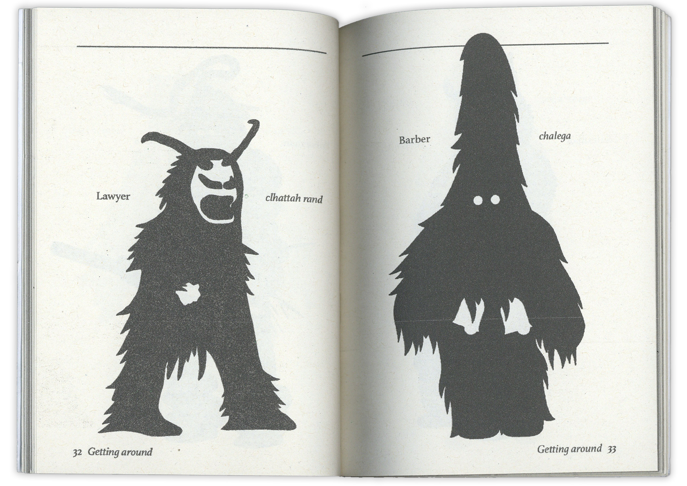
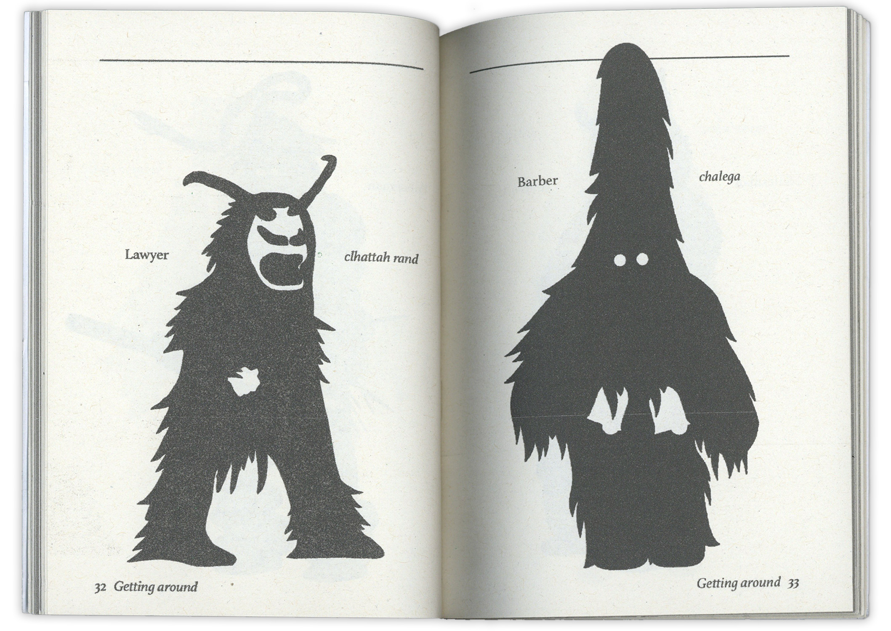
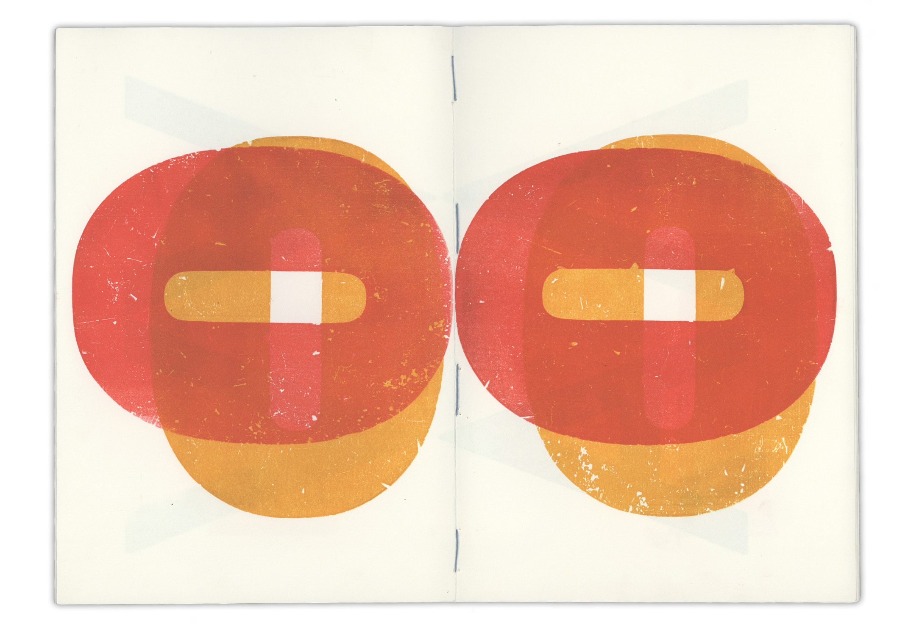
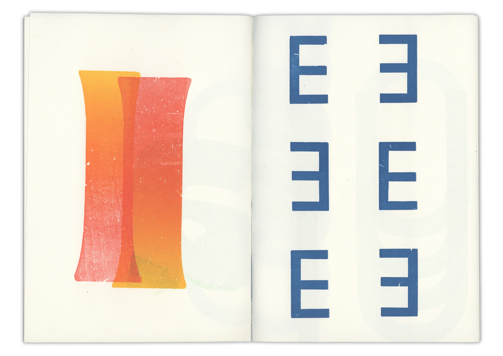
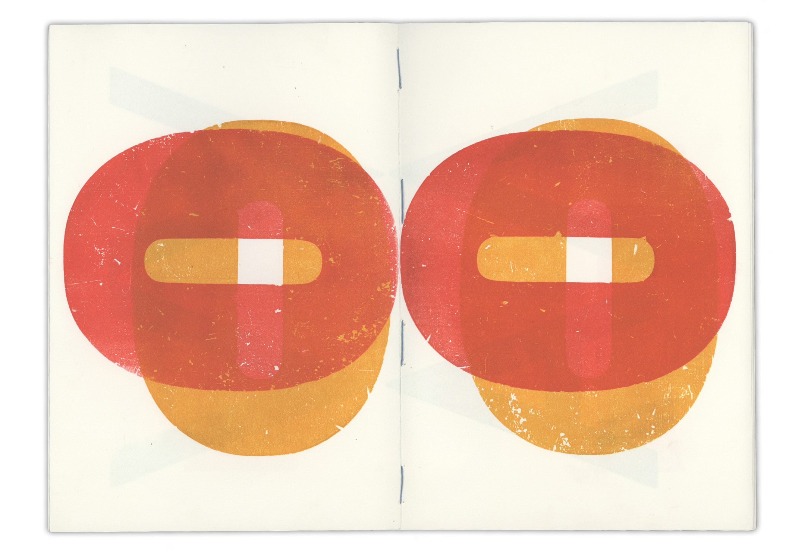
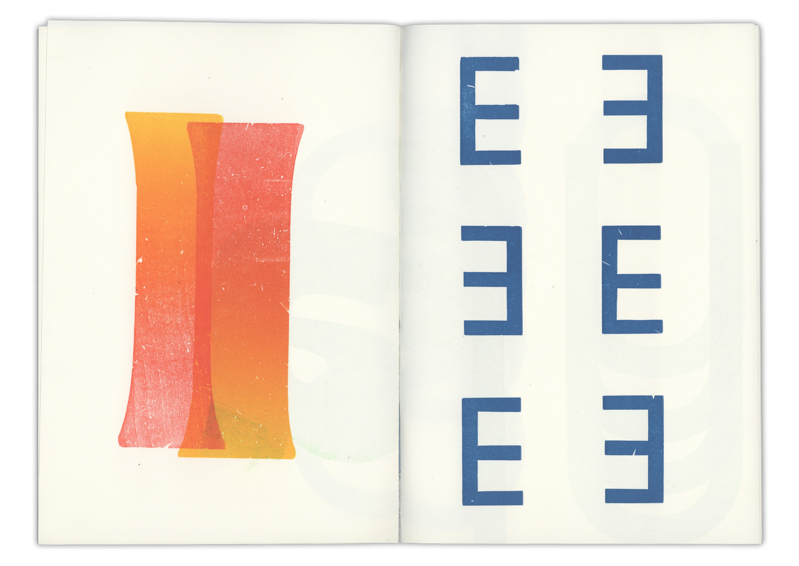

I am an American Graphic Designer from France.
Based in the Hague.
I am currently busy in the fields of image making and motion graphics.
A sixteen-page publication aiming to capture a conversation that I had with Dutch Reiki Master and healing crystal salesman named Marcel Vis. The structure of the publication is based on Marcel’s journey from being healed to becoming a healer. Each spread focuses on the healing of an individual chakra by extracting relevant quotes from our conversation and pairing them with the stones that heal the corresponding chakra.
Public space is filled with messages of all kinds written and performed by the individuals that inhabit it. As a result of these instances of self-expression, different forms of written and oral language have been born that have gone unaccounted for in the history of communication.
This catalogue is an attempt to record and organize them and give them the attention they deserve.
Part of the exhibition
Tools of Communication,
Page Not Found, Den Haag Sep 2018
A collection of exercises about image and text, opened by an extract from Hito Steyerl’s essay of the same name.
Revival of a Historic Typeface
This publication was created solely using the content of four books:
1. Wilder Mann: The Image of the Savage Charles Fréger (2012)
2. Hindi/ Urdu Phrasebook Parvez Dewan (1988)
3. Modern Sculpture Herbert Read (1964)
4. Not A toy, José Teunissen (2011).
The result is a pocket phrasebook for a dangerous faraway planet.
Collaboration with Nedislav Kamburov.
Due to limited space in the Netherlands, it is not uncommon to share your grave with other people or to have your body exhumed after a number of years. The price of a plot varies greatly across every province and city in the Netherlands. Therefore, the Dutch have been turning towards other means of body disposal as of late.
This publication explores the particularities of the Dutch funerary environment and its current costs and laws.
Collaboration with Anastasia Umpeleva
In an age of skyscrapers and high-rise buildings, it's nearly impossible to view the enormity of Cathedrals with the mindset of a medieval pilgrim. But, even from a 21st-century perspective, it's hard not to be moved by the sheer size and scale of the massive stone structures. This publication recounts the experiences of 10 different tourists as they enter cathedrals while on holiday. All of the typefaces used have been extracted from carvings from different Spanish and French cathedrals.
The following publication contains a collection of excerpts of scripts from recent comedy movies that include suicide themed jokes. Should suicide be joked about? Can jokes about suicide be funny, or should they be avoided at all costs? https://www.youtube.com/watch?v=300Q0_B1uYc
A small book of letterpress experiments.
Our project revolved around the theme of equality in 1968 and Martha Rosler's series of collages entitled 'House Beautiful: Bringing the War Home'. We designed the three key sources that we read in order to write our essay.
Collaboration with:
Selina Landis
Michelle Janssen
Emma Benozzi
The Giant Floating Eyeball was a project collaboration between the Dutch Ministry of Finance and the Royal Academy of Art, The Hague (KABK).
The Ministry of Finance currently uses algorithms to perform calculations in relation to financial market projection, national budget, and tax. We were tasked with creating our own algorithms to help predict the next market crash.
Nedislav Kamburov and I created our own algorithm through the combination of astrological data and stock market trends in order to calculate future fluctuations through the movement of the spheres.
Collaboration with Nedislav Kamburov.
Part of the exhibition
The Giant Floating Eyeball — Finance & Algorithm,
Ministerie van Financiën
May 2019
This ‘Twin Poster’ was made solely using the same components as the original poster. Original poster by Lamm & Kirch.
This poster was made to promote the lecture by Paulo Tavares concerning deforestation and the Anthoposcene.
A poster for a fictional perfume designed by Thierry Muegler. There are two versions of this poster; one effect-based and a minimalistic one.
Promoting a lecture by Eva Verberne for the KABK’s interior architecture department.
Collaboration with Nicolai Schmelling.
A series of posters designed around images that were generated using Processing.
A poster for an event hosted by Gert Dumbar at the Royal Academy of Art in the Hague. The design was silkscreened onto 65 pillowcases and attendees were asked to bring their own pillows to complete the event’s full slumber party/ adult film set atmosphere.
Is there a better feeling than breathing clean, fresh air straight out of the Dyson Pure Cool TP01?
As clean air becomes scarcer, more products claiming to restore air quality are entering the market. Particulate Matters explores the commodification of clean air by studying the language of air-purifier commercials.
In this project, CGI mascots of ‘good’ and ‘bad’ air particles have been directly extracted from different air-purifier commercials. The air particles have been personified with scripted speaking roles. By re-contextualizing the virtually branded air-particles, Particulate Matters aims to reveal the overlapping lexicons of cleanliness and right-wing speech and highlight the sombre reality that air purifiers are masking.
The outcome of a series of flyers designed within strict restrictions.
A digital illustration for the collaborative publication ‘Questioning answers’. This piece was based on an interview conducted between Bina Rothblatt and her robotic counterpart, Bina 48.
A poster designed to accompany a publication exploreing the theme of bacteria.
In the future, everything that can be ethically made will be ethically made.


 



 


